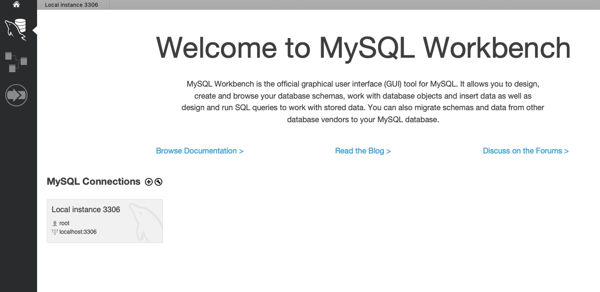
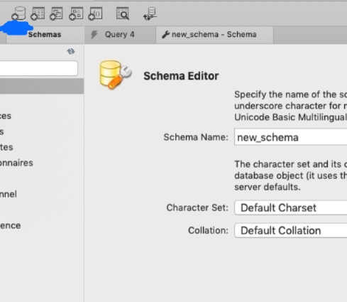
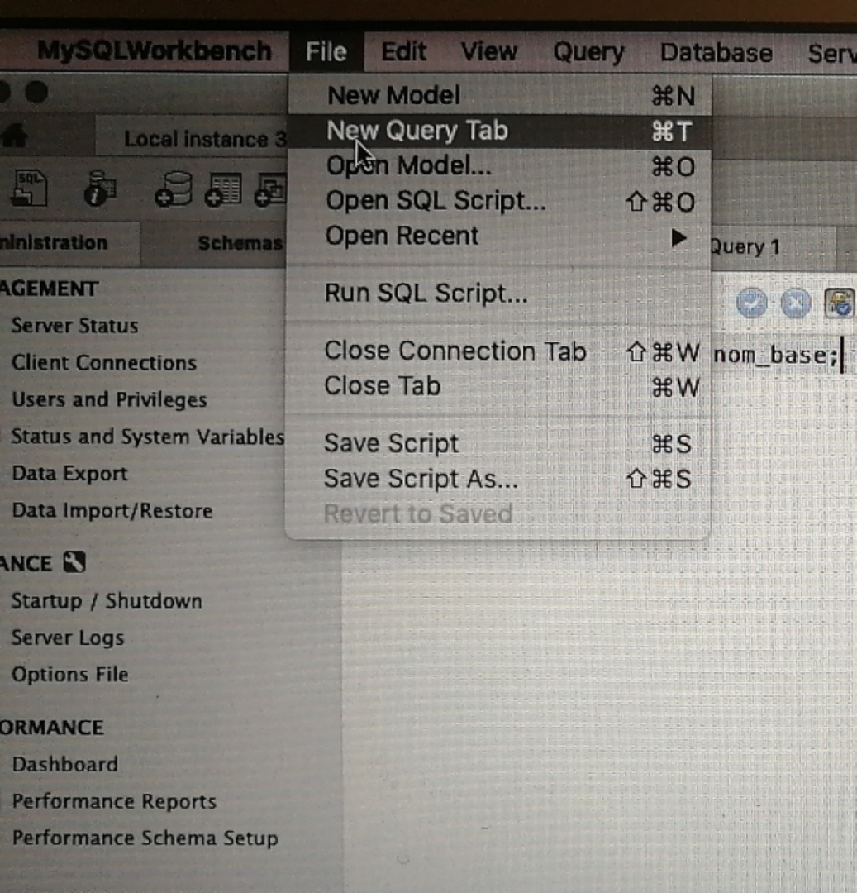

Le SQL est un langage informatique qui permet d'interagir avec des bases de données relationnelles.
MySQL est un Système de Gestion de Bases de Données Relationnelles qui utilise le langage SQL. C'est un des SGBD les plus utilisés.
Oracle database - payant, principalement utilisé par des entreprises PostgreSQL - langage utilisé : PL/pgSQL
SQLite - il stocke toutes les données dans de simples fichiers et il n'utilise pas le schéma client-serveur utilisé par la majorité des SGBDR. Par conséquent, il est difficile de sécuriser le système. Peu utilisé
Pour télécharger MySQL, vous pouvez vous rendre sur le site
suivant :
http://dev.mysql.com/downloads/mysql/#downloads
L'installation est terminée mais pour pouvoir utiliser les
programmes clients de MySQL, il faut que l'invite de commande
sache où se trouvent ces programmes. On va donc ajouter le chemin
vers MySQL aux dossiers explorés par l'invite de commande. Voici
les lignes de commandes de cette configuratopn sous Mac OS.
cd /usr/local/mysql
sudo ./bin/mysqld_safebgecho 'export PATH=/usr/local/mysql/bin:$PATH' >> ~/.profile
Il suffit d'aller au site officiel du MySQL et télécharger son outil en interface graphique proposé qui s'appelle MySQL Workbench https://dev.mysql.com/downloads/workbench/

Et puis vous cliquez "Local instance" au dessous de "MySQL Connections" pour vous connecter à votre base de données et éventuellement configurer votre mot de passe.
Dans l'environnement de Workbench, cliquez l'icône suivante

OU
Ouvrir un nouveau Query Tab et tapez la ligne de commande suivante

CREATE DATABASE nom_base SET 'utf8';
-- création du tableau
CREATE TABLE Gestionnaires (
nom_gestionnaire VARCHAR(50) NOT NULL,
adresse_gestionnaire VARCHAR(100) NOT NULL,
PRIMARY KEY (nom_gestionnaire)
)
-- saisie des données pour le tableau Gestionnaire
INSERT INTO Gestionnaires (nom_gestionnaire, adresse_gestionnaire)
VALUES ('caron', '12 bd blanqui'),
('dubois', '121 rue de vaugirard'),
('rocher', '45 rue buzenval'),
('semin', '8 allee des haies');
CREATE TABLE Clients (
nom_client VARCHAR(50) NOT NULL,
adresse_client VARCHAR(100) NOT NULL,
PRIMARY KEY (nom_client)
)
INSERT INTO Clients
VALUES ('adam', '2 av de segur'),
('curry', '10 rue des matins'),
('martin', '24 rue linne'),
('mathias', '23 rue barbes'),
('simon', '26 bd raspail'),
('valentin', '80 rue dunois');
CREATE TABLE Personnel (
nom VARCHAR(50) NOT NULL,
num SMALLINT NOT NULL,
fonction VARCHAR(50) NOT NULL,
n_sup SMALLINT NOT NULL,
embauche DATE,
salaire MEDIUMINT NOT NULL,
comm SMALLINT NOT NULL,
n_dept SMALLINT NOT NULL,
PRIMARY KEY (num)
)
INSERT INTO Personnel
VALUES ('martin', 16712, 'directeur', 25718, '1990-05-23', 40000, 4000, 30),
('dupont', 17574, 'administratif', 16712, '1995-05-03', 9000, 500, 30),
('lambert', 25012, 'administratif', 27047, '1991-04-14', 12000, 150, 20),
('dupond', 26691, 'commercial', 27047, '1988-04-04', 25000, 2500, 20);
-- 3 et 4 BDD
-- 3 sql intro
SELECT adresse_client
FROM clients
WHERE nom_client = 'simon';
SELECT *
FROM Comptes
WHERE solde > 0;
SELECT numero_compte
FROM Comptes
WHERE nom_agence = 'jussieu';
SELECT *
FROM Comptes
WHERE solde > 0 && nom_agence LIKE 'jussieu';
-- 4 fonctionsAgreg
-- nombre de clients
SELECT COUNT(nom_client)
FROM Clients;
-- le solde moyen de tous les comptes
SELECT AVG(solde)
FROM Comptes;
-- le solde moyen de tous les comptes de toutes les agences regroupes par gestionnaire
SELECT AVG(solde), nom_gestionnaire
FROM Comptes
GROUP BY nom_gestionnaire;
-- les soldes moyens superieurs a 300 regroupes par gestionnaire
SELECT AVG(solde), nom_gestionnaire
FROM Comptes
GROUP BY nom_gestionnaire
HAVING AVG(solde) > 300;
-- personnel
-- les employes gagnant plus que tous les employes du departement 20
SELECT nom
FROM Personnel
WHERE salaire > ALL(
SELECT salaire
FROM Personnel
WHERE n_dept = 20);
-- Extraire le salaire de tous les employés du département 30
-- et après rechercher les employés qui gagnent plus que chacun de employés du département 30
SELECT nom, salaire
FROM Personnel
WHERE n_dept = 30
HAVING salaire > ANY(
SELECT salaire
FROM Personnel
WHERE n_dept = 30);
-- Liste des employés du département 20 ayant la même fonction qu’un employé du département de DUPONT.
SELECT nom
FROM Personnel
WHERE n_dept = 20 AND fonction IN (
SELECT fonction
FROM Personnel
WHERE n_dept = (
SELECT n_dept
FROM Personnel
WHERE nom LIKE 'dupont')
);
-- Savoir le département de Dupont + connaître les fonctions des emplyés de ce département
-- + extraire les employés qui ont les mêmes fonctions
SELECT nom, fonction
FROM Personnel
WHERE fonction IN (
SELECT fonction
FROM Personnel
WHERE n_dept = (
SELECT n_dept
FROM Personnel
WHERE nom LIKE 'dupont')
);
-- Donner pour chaque commercial son revenu (salaire+commission)
SELECT nom, (salaire+ comm)
FROM Personnel
WHERE fonction = 'commercial';
-- Donner la liste des employés dont la commission est inférieure à 5% du salaire
SELECT nom
FROM Personnel
WHERE comm < (0.05 * salaire);
-- Donner la liste des administratifs classée par commission sur salaire décroissant
SELECT nom, comm/salaire, comm, salaire
FROM Personnel
WHERE fonction = 'administratif'
ORDER BY comm/salaire DESC;